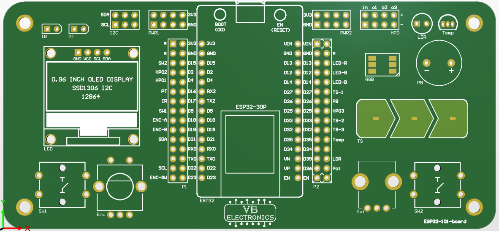
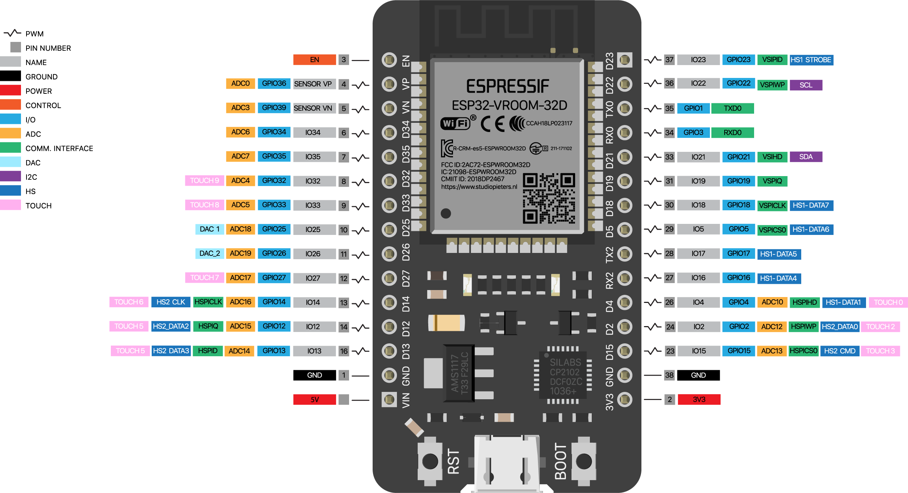
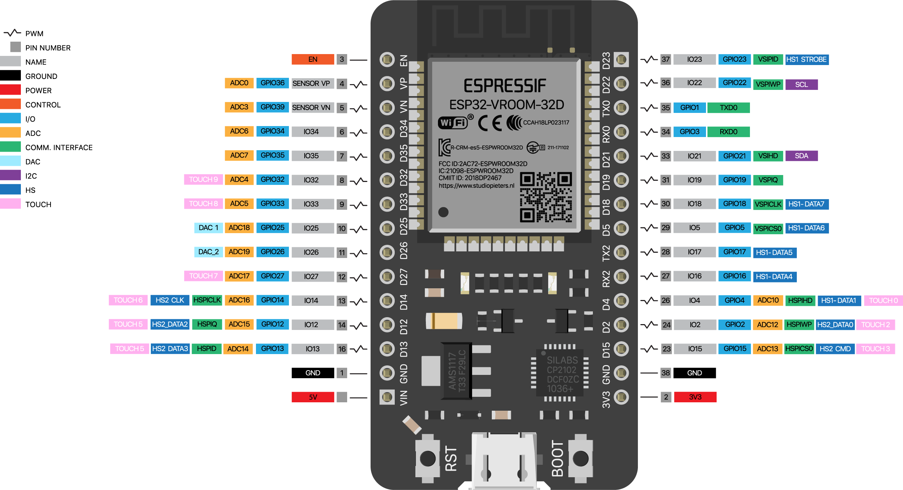

About
Redsting is a ble RC car. Esp32 on board controlled by PS3 controller
Basic functions
X - Forward
/\ - Backward
[] - Not in use
() - Not in use
R1 - Forward
R2 - Backward
LeftAnalog - Turn Left/Right
Start - disconnect from Esp32 and send deepsleep command
etc.
sample picture

Above: Cupcake indexer in progress
 Above: Cupcake indexer in progress

Above: ESP32 30 pin devboard
Above: Cupcake indexer in progress

Above: ESP32 30 pin devboard